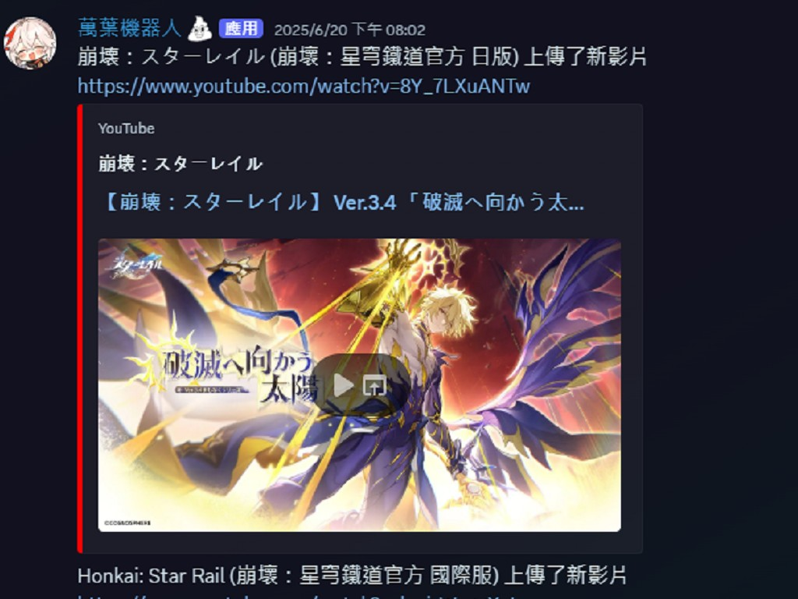
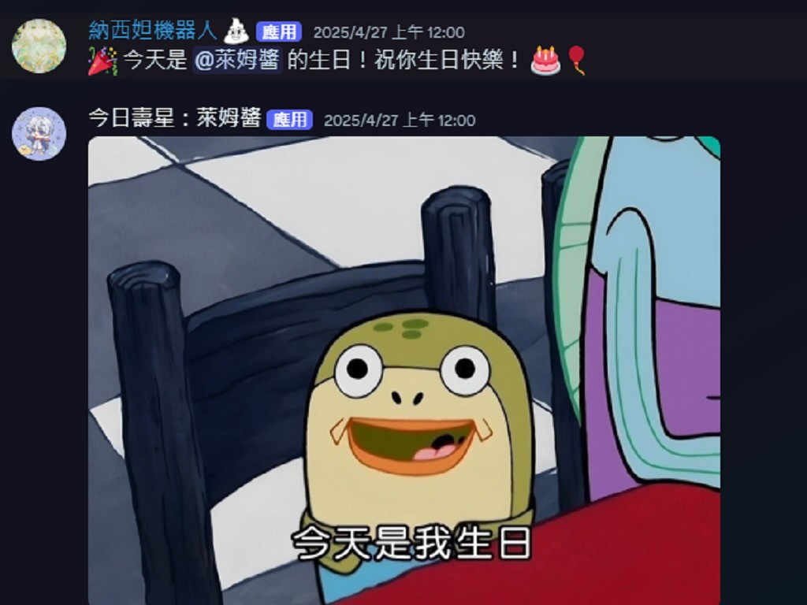
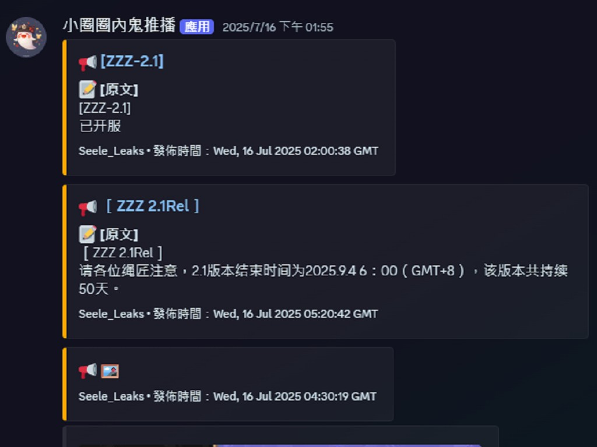

設計三隻機器人用來推播各式訊息以及指令操作。機器人如下：
萬葉機器人與納西妲機器人使用Python語言為主要語言進行撰寫，並以 Github Action 與 Github Gist 作為資料觸發更新與資料儲存方法。
小圈圈內鬼推播機器人同樣使用Python語言為主要語言進行撰寫，但以 Railway 與 Github Gist 作為資料觸發更新與資料儲存方法。

負責每3分鐘爬蟲一次米哈遊Youtube官方頻道，並進行推播最新影片資訊。

Discord伺服器管理機器人，可即時建立回應圖片指令以及自動推播生日慶祝賀圖等。

自動爬蟲 Telegram頻道消息推播至 Discord伺服器中。
此專案屬於非營利性質，僅用於個人學習與社群交流用途，所有個人參與之設計與開發行為不涉及商業或收費行為。